馬来西亜珍寺大行進、修行のシメの地は
マラッカ（ムラカ）である。
マラッカはいわずと知れた中世からの交易地。ハクション大魔王が腰を抜かす量の胡椒がこの港に集積されヨーロッパに渡っていった。
そして中世以降、様々な国が治世をした街でもある。
そんなマラッカの象徴、セント・ポール寺院見物もそこそこに向かった先は…
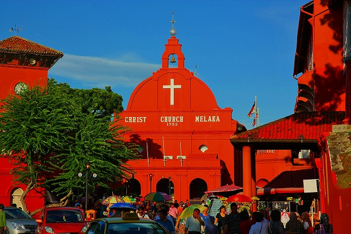
マラッカの町外れ、
三寶山。
ここには
マレーシア最古にして最大の華人墓地があるのだ。
なんでも中国以外で最大の華人墓地だとか。
町外れとはいえ中心街から歩いていける場所で、道中の町並みもいかにもマラッカらしい
ババニョニャ風（東西混成）のタウンハウスが続いている。
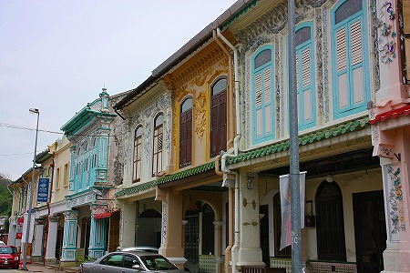
そんな街が途切れ、丘陵地にさしかかると木々の割合が増え、ちょっとしたジャングルみたいになってくる。
最初に目にしたのは
ムスリムの墓地だった。
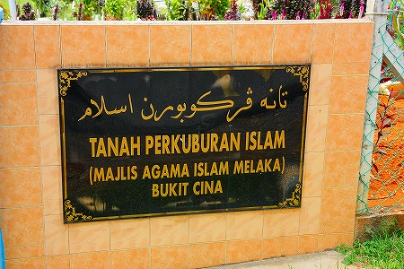
マレーシアのマジョリティであるマレー人の墓地なのだろう。
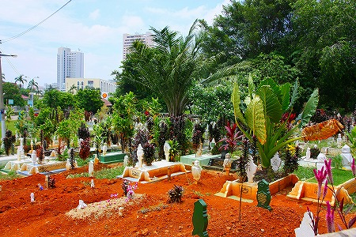
ムスリムの墓は土葬で、頭上と足元にチェスの駒のような石碑を建てるのが基本的なスタイルだ。
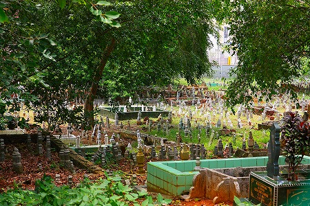
新しいものは埋葬区画が囲われていてテリトリーが明確にされているが、古いものは単に石碑が乱雑に建っているだけで、どの石とどの石がペアになっているのかすら解らない。
宗教としてはあまり馴染みのないイスラム教だが、こと墓に関しては何となく土葬だった頃の日本の墓地に似いているように思える。
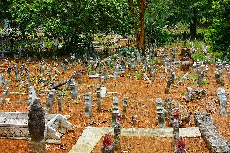 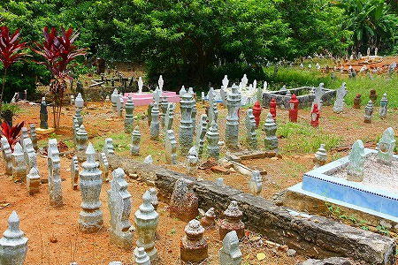
むしろ墓というものは
宗教の制約を超えて民族的な死生観に起因している（少なくとも日本では）ため、どこか似たような風景になるのかもしれない。
そんなこんなで三寶山の華人墓地に着いた。マレー語表記のBukitCinaとは「中国の丘」という意味だ。
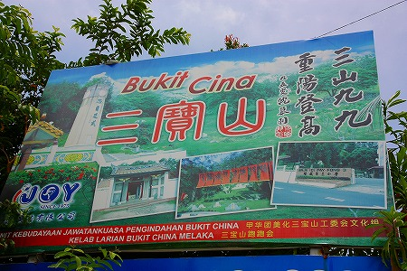
この地に何故華人墓地があるのか、その歴史は中世にまでさかのぼる。
14世紀末に建国されたマラッカ王国だが15世紀にはすでに華人コミュニティがあった。
当時のマラッカ王朝は明朝へ朝貢しており、明朝からは皇帝の娘がマラッカ王朝へ嫁するという関係を結んでいた。
その皇帝の娘はじめ明朝の人々が住んでいたのがこの三寶山だったのだ。
その後、16世紀にはポルトガル領、17世紀にはオランダ領になるのだが、その頃に三寶山は華人の墓地になっていたという。
マレーシアの他の地域にある華人墓地はほとんど19世紀になってから作られたことを考えると、このマラッカの華人墓地が
いかに特別な場所であるかがお分かりいただけるかと思う。
広さは42ヘクタール。東京ディズニーランドよりちょい小さい位、
バチカン市国とタメを張る位の広さだ。
ただし、
日本最大級の霊園はその6倍ほどあるところが、わが国の奥深いところなのだが。
入り口にはこんな看板が。
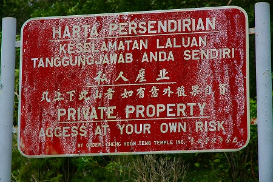
マレー語、中国語、英語で表記されている。マレーシアではこの三か国語での表記が基本。
意味は…英語が一番わかりやすいですね。要は私地なので入るのは
自己責任でね、ということ。
んんん？単なる墓地にしてはやけに物々しい物言いではないか。
もしかしたら墓地内に野犬がいて危険だったりするのだろうか。それとももっと熱帯テイストかつワイルドな動物が人を襲ったりするのだろうか？
マレーといえばオオトカゲ？猿？…ひょっとして
虎？
さらにさらに人を襲うのは動物だけとは限るまい。一番恐ろしいのは人、じゃないか。
もしかして人気がないのをいいことに山賊よろしくギャング共がお墓参りに来る人をカツアゲしてるのでは…。うん、それが一番確率的には高そうだな。
というわけで一瞬山に入るのを躊躇したが、いたって平和な普通の墓地っぽいので、「まあ、危なそうだったら
走って逃げるか」といういつものスタンスでとりあえず進んでみることにした。
いたって普通の華人の墓地である。
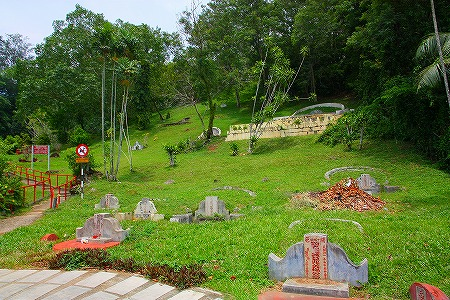
基本的には
沖縄と同じような亀甲墓が斜面にしつられている。
先ほどのムスリム墓地に比べると広々としているのが印象的だ。
進んでいくと何やら不思議な造形物が現れる。
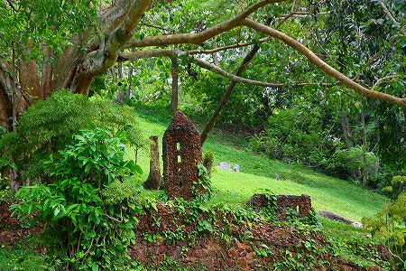
これは何かの建物を模したものなのだろうか。
さらに立派な
建物のミニチュア。
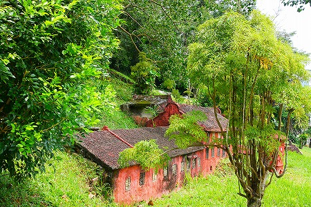
んんん？どこかで見たような、しかもさっき見たような…
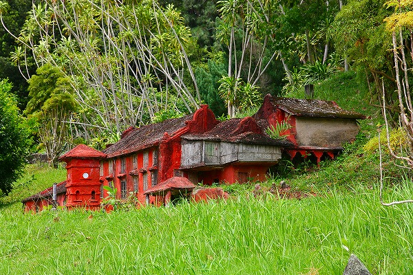
そっか！
セントポール寺院↓じゃないか。
さらに大航海時代の帆船、そしてその後ろにはこれまたマラッカのシンボルである
サンチャゴ砦、らしきモノも。
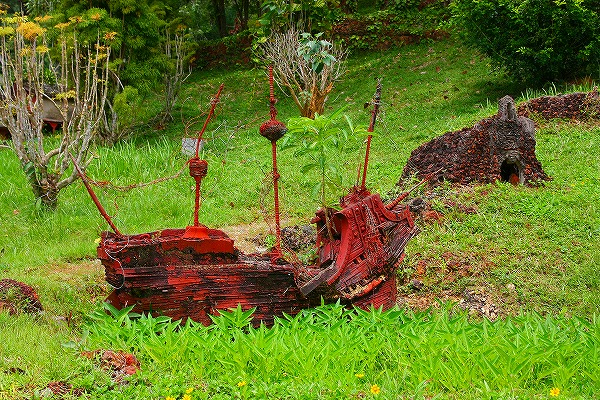
さらに中国寺院風建造物も。
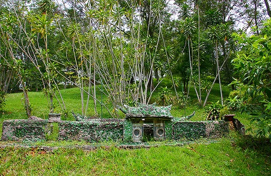
どこの寺かは分からないが、額には
南海飛来と書いてある。
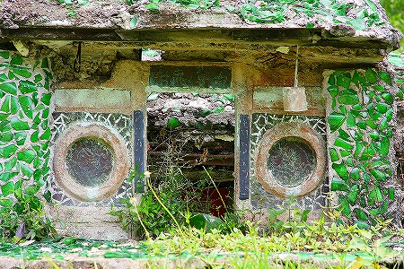
瓶のかけらでモザイクを施してある。
それにしてもこれらのミニチュア建造物もお墓なのだろうか？
もしそうだとしたら相当な珍寺ならぬ
珍墓だな。
そうでないとすれば墓地に勝手にミニチュア建築を作っているわけで、それはそれで珍しい光景だわな。
亀甲墓が延々と続くが、ひとつひとつのお墓は離れているので見晴らしも良く、気持ちがいい。
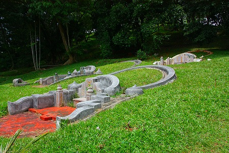
誰だ、さっきまで散々山賊とか虎とか言ってたのは…。
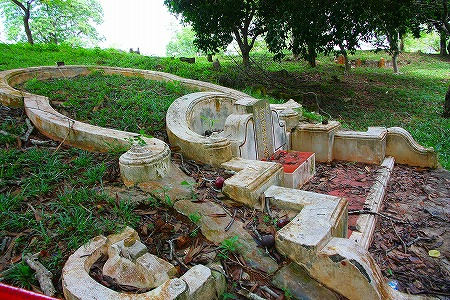
墓に何かが撒かれているようだ。
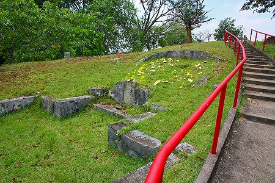
近寄ってみると…
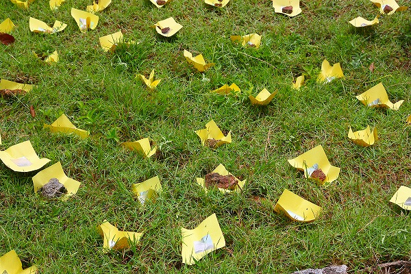
黄色いシートに銀紙が貼られたものだった。
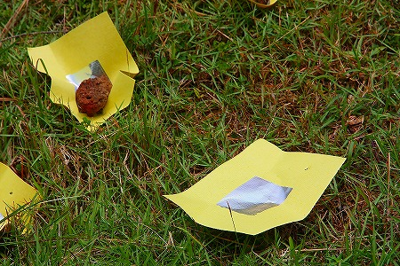
恐らく銀箔を模したシールなのだろうと思う。
以前、
大分で金のシールを金箔に見立てて貼っているお寺があったが、基本的にはそれと一緒なのだろう。
もしかしたらこのシールも金色が褪めて銀色になっちゃったのかもね。
風で飛ばされないように一枚一枚に石を乗せてあるところが涙ぐましいぞ。
熱帯性の木々がいい塩梅で植栽されている中に墓が点在している様はどこか欧米の墓地すら思わせる広々とした感じ。
今まで色々なところで墓を見てきたが、アジアの墓地、というイメージとは程遠い。
亀甲墓を上からみるとこんな感じ。
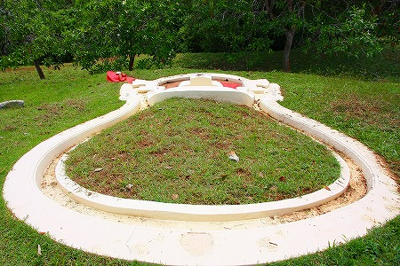
傍にある赤い墓は子供の墓。亀甲墓では子供の墓はこうして別に葬られるケースが多い。
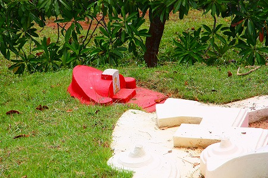
丘の向こうにはマラッカの市街が見える。
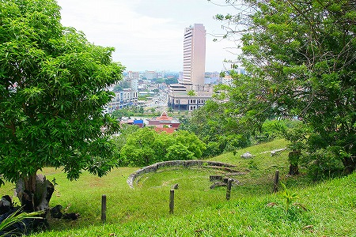
おっと、やけににぎやかだと思ったら…
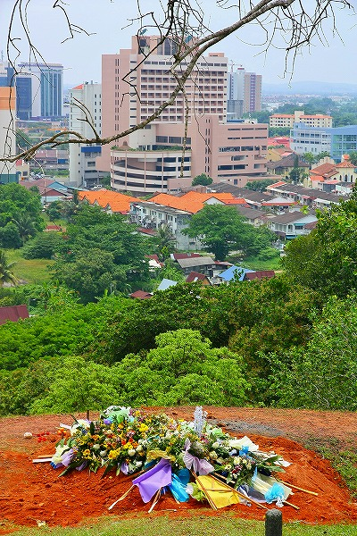
埋葬したばっかりですか。
悲しいほどに華やかな埋葬風景である。
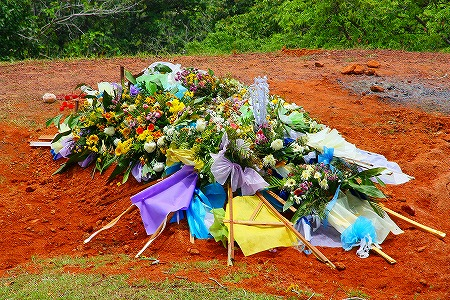
暗くて惨めで悲しいはずの「死」という事実を殊更華美に大袈裟に転調させるのは何故なのだろう？
それは大事な人を亡くした悲しみを葬儀の華やかさや忙しさに身をゆだねることで一瞬でも忘れさせようとする民俗的な知恵なのではなかろうか。
特に仏教圏では死は終わりではなく、来世の始まり、と意味を転換をすることで死そのもののイメージを転換させ遺族の心痛を救済しようとしているのかもしれない。
いずれにせよ死にまつわる民俗的な行為は結婚式に匹敵する
異様なまでの華やかさを備えているのは注目するに値する点であろう。
そうこうしているうちに丘の頂上に出た。これといったモニュメンタルなものもなく、ガラーンとしている。
後に知る事になるが、この三寶山には華僑抗日殉難義士紀念碑なるものがあったらしいがどこにあったのか全く解りませんでした。
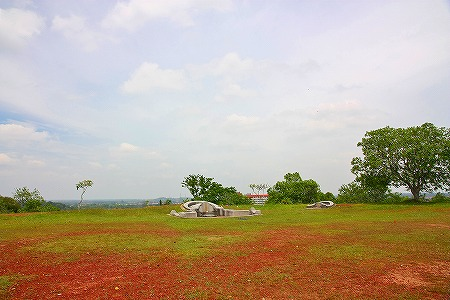
華人の墓は風水によってその位置や方向が決まる。様々な要素を満たすため広大な敷地が必要になる。
この三寶山が広大なのは墓の数が多いだけではなく、風水の決め事を忠実に守っているからなのだ。
風水にうるさい香港でさえこと墓地に限れば横並びの霊園タイプがほとんどだし、比較的古来の中国の民俗が伝承されている台湾においてもこれほどひとつひとつの墓同士が離散している墓地は珍しい。
中国以外で最大の華人墓地と言われるだけに贅沢なスペースの使い方をしている。
いや、逆にこれだけ広大な敷地を持っていたからこそ本来の風水の作法を存分に駆使できるのだろうか。
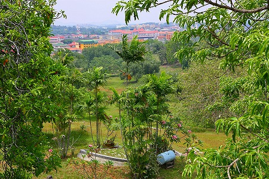
この華人墓地、市街地に近く、広大な場所だけに過去に何度か撤去の危機に瀕している
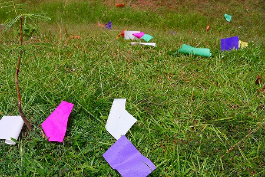
中でも
1984年のマラッカ州政府による取り壊し案に対する保存運動は激しかったという。
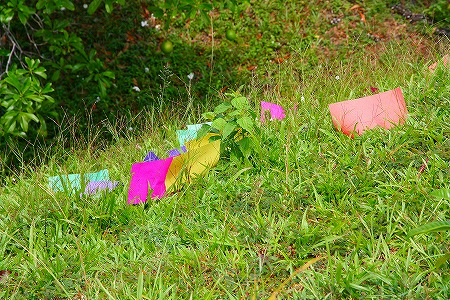
この丘をごっそり削って再開発をして、削った土でマラッカの沿岸部を埋め立てるという計画に華人社会が反発し、大規模な保存運動を起こしたのだ。
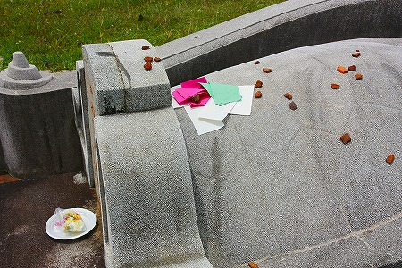
野党議員やマレーシア中の華人を巻き込んでの保存運動が功を奏して1985年には開発中止を決定した。
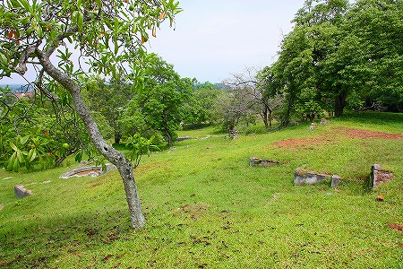
この運動の過程を見るといかに華人の中で墓が重要なウェイトを占めているかが伺える。
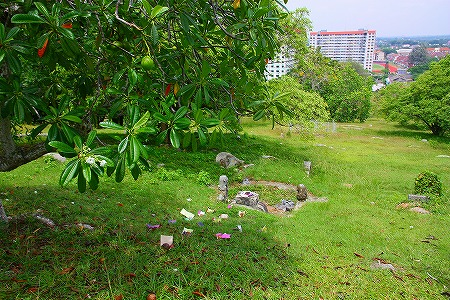
特に異郷でその土地の基盤を築いてきた祖霊に対する想いは並々ならぬものがあるのだろう。
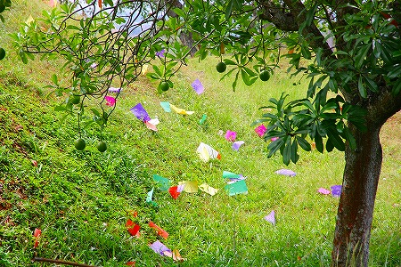
色とりどりの紙が墓の周辺に散らばっていた。
はるかかなたまで続く墓。その向こうには団地が連なっている。
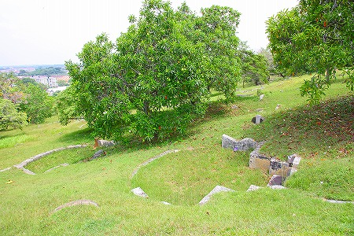
帰り道、気づいたが↓これって亀なのかな？
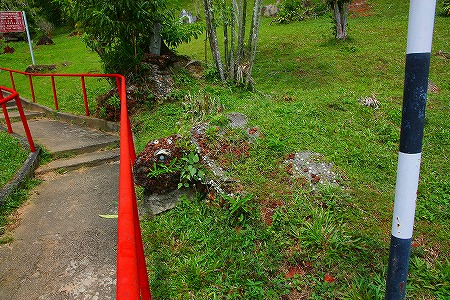 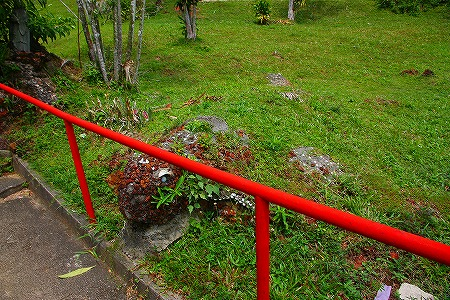
この街ではマレーシアという土地で生活している華人における死の観念や民族的な記憶のどこを捨ててどこを残しているのか、を考察することになりそうだ。
参考文献；「マレーシアにおける都市再開発と華人墓地」 市川 哲 史苑第65巻2号
最後の修行へGO！
馬来西亜珍寺大行進
珍寺大道場 HOME